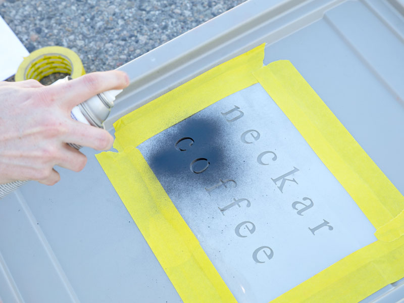
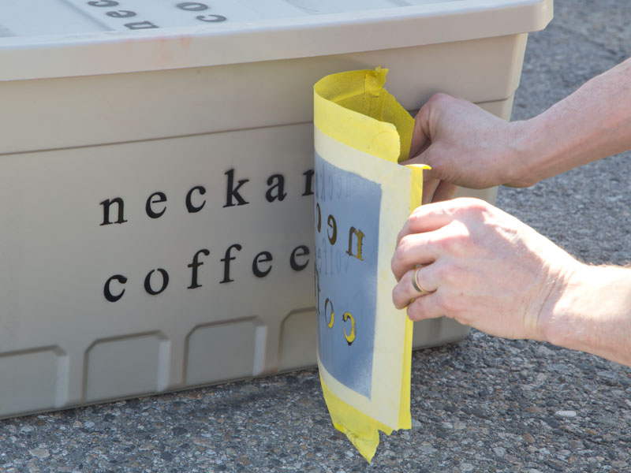
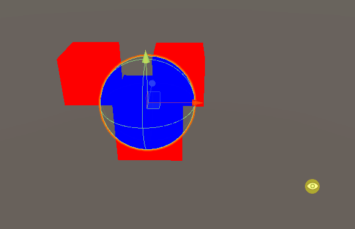
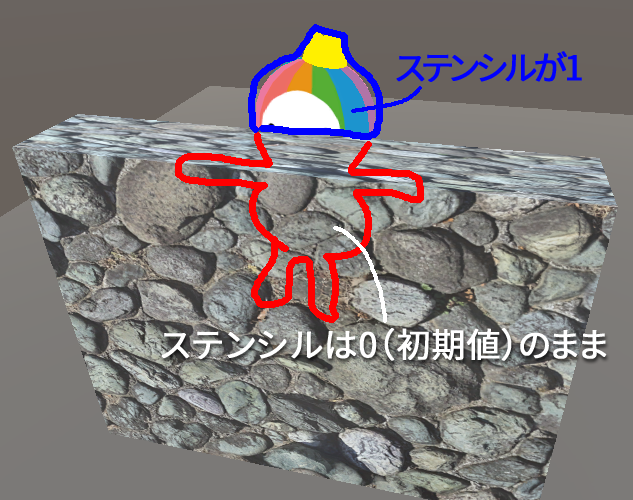
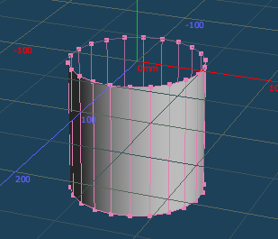
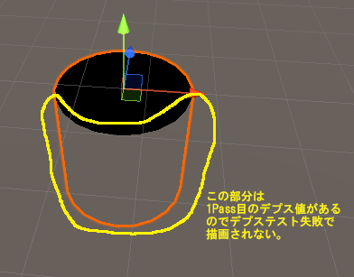
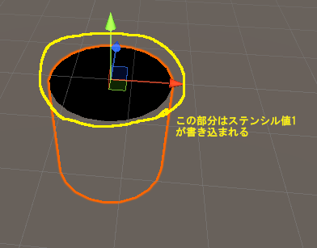
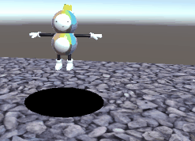

ステンシルバッファ
一般的に、「Stencil」とは「型紙」や「型抜き」のことです。以下のようなものを指します。


シェーダーにはステンシルという機能があり、これを使うとオブジェクトの一部だけを切り抜いて描画したりすることが可能になります。
使用方法は、少しややこしいです。理由としては、次の点が挙げられます。「ステンシルバッファ」とは、画面のピクセル数と同じ数の情報を持つことができるバッファです。そこに格納できるのは色ではなく、0～255の整数です。ここに値を書き込むことによって型を作り、その値を参照して塗るか塗らないかを決めることによって、型抜きのような効果が実現できます。
これをうまく使うと、様々な特殊な表現が可能になります。
とりあえずステンシルを使った最短のシェーダーを作り、動作を見ていきましょう。
あるオブジェクトAに重なったときだけ、オブジェクトBを描画するシェーダーです。

↑Cubeに重なったときだけ、Sphereが描画されている。
まず、新規シェーダーを作成します。名前は「StencilA」とします。
Shader "MyShader/StencilA"
{
SubShader
{
Tags { "Queue"="Geometry" "RenderType"="Opaque" }
Pass
{
Stencil {
Ref 1
Comp always
Pass replace
}
CGPROGRAM
#pragma vertex vert
#pragma fragment frag
float4 vert (float4 pos : POSITION) : SV_POSITION
{
return UnityObjectToClipPos(pos);
}
fixed4 frag () : SV_Target
{
return float4(1, 0, 0, 1);
}
ENDCG
}
}
}
新規マテリアルを作ります。名前は「StencilAMat」とでもします。そのマテリアルにStencilAシェーダーを設定します。
新規シェーダーを作成します。名前は「StencilB」とします。
Shader "MyShader/StencilB"
{
SubShader
{
Tags { "Queue" = "Geometry+1" "RenderType" = "Opaque" }
Pass
{
Stencil {
Ref 1
Comp equal
}
CGPROGRAM
#pragma vertex vert
#pragma fragment frag
float4 vert(float4 pos : POSITION) : SV_POSITION
{
return UnityObjectToClipPos(pos);
}
fixed4 frag() : SV_Target
{
return float4(0, 0, 1, 1);
}
ENDCG
}
}
}
新規マテリアルを作ります。名前は「StencilBMat」とでもします。そのマテリアルにStencilBシェーダーを設定します。
適当にオブジェクトにアタッチして試してみます。
例えば、下図の例では、CubeにStencilAを適用し、SphereにStencilBを適用しています。
シェーダーにステンシルを記述した場合、「ステンシルテスト」と呼ばれる処理が行われます。ステンシルテストは、フラグメントシェーダーの後に、ピクセル単位で実行されます。テストに合格すると、通常通りピクセルに色（フラグメントシェーダーの出力結果）が塗られますが、不合格となった場合は、フラグメントシェーダーの出力結果は使われません（描画が行われない）。
前章のシェーダーのStencilから始まるブロックがステンシルの命令です。
Stencilの構文は次のようになっています。
Stencil {
Ref 基準値
Comp 比較関数
Pass 合格時の更新処理
Fail 不合格時の更新処理
ZFail ZFail時の更新処理
}
ステンシルは、この1つの構文で、「型の作成」と「型で抜くように描画」の2つの機能を兼ねているので、注意してください。よく初学者がつまづくポイントです。
Ref, Compなど、複数の命令から成りますが、すべての命令は省略可能です。また、上記以外にも命令がありますが、割愛します。詳細はUnityのマニュアルを参考にしてください：https://docs.unity3d.com/ja/2018.4/Manual/SL-Stencil.html
Ref命令は基準値を設定します。基準値は0～255の整数が指定可能です。文献によっては「参照値」と呼ばれます。
基準値は、次の2つの用途で使われます：
まったく違う2つの用途に使われるので注意してください。よく初学者がつまづくポイントです。
Comp命令は比較関数を設定します。比較関数でバッファと基準値を比較した結果、ステンシルテストの合格/不合格が決まります。比較関数は、以下の種類があります：
| 名称 | 説明 |
| Greater |
基準値がバッファ値より大きい場合にテスト合格となる。 |
| GEqual |
基準値がバッファ値以上の場合にテスト合格となる。 |
| Less |
基準値がバッファ値より小さい場合にテスト合格となる。 |
| LEqual |
基準値がバッファ値以下の場合にテスト合格となる。 |
| Equal |
基準値がバッファ値と等しい場合にテスト合格となる。 |
| NotEqual | 基準値がバッファ値と異なる場合にテスト合格となる。 |
| Always | 常にテスト合格となる。 |
| Never | 常にテスト不合格となる。 |
Pass命令は合格時にバッファをどのように更新するかを指定します。
Fail命令は、不合格時にバッファをどのように更新するかを指定します。
ZFail命令は、ステンシルテストは合格だが、デプステスト（Zテストともいう）で不合格となった場合（描画しようとした位置よりも手前のオブジェクトが既に描画されているため、描画しないと判断された場合）にバッファをどうするかの指定です。
バッファの更新処理は、以下の8種類があります：
| 名称 | 説明 |
| Keep | バッファ値を変更しない。デフォルト値はこれ。 |
| Zero | バッファ値を0にする。 |
| Replace | バッファ値を基準値に書き換える。 |
| IncrSat | バッファ値に1加算（255の場合はそのまま） |
| DecrSat | バッファ値を1減算（0の場合はそのまま） |
| IncrWrap | バッファ値に1加算（255の場合は0になる） |
| DecrWrap | バッファ値を1減算（0の場合は255になる） |
| Invert | 全ビットを反転させる。 |
これはステンシルの機能とは別の機能ですが、前章のサンプルではQueueを指定しています。
Queueは描画処理を行う順番に関係します。Geometryというのは定数で、内部的には2000です。Geometryの他にも、Background(1000)、AlphaTest(2450)、Transparent(3000)、Overlay(4000)などがあります。Queueを指定しなかった場合のデフォルト値はGeometryです。
Geometry+1と記述すると、2001という意味になります。他のGeometryが設定された全てのオブジェクトの描画が終わってから、Geometry+1のオブジェクトの描画が行われます。
前章のサンプルでは、StencilBシェーダー（Sphere）が描画されるときには、既にStencilAシェーダー（Cube）の描画が終わっている（ステンシルバッファが完成している、つまり型が完成している）必要があるので、StencilBシェーダーの描画が後で行われるようにQueueをGeometry+1としています。
このように、ステンシルバッファを使う際は、描画順に気を使う必要があります。
もう少し実用的なサンプルを作成してみましょう。

これは、壁に遮られたときにシルエットを描画するシェーダーです。ポイントを黄色く強調表示します。
Shader "MyShader/Silhouette"
{
Properties
{
_MainTex ("Texture", 2D) = "white" {}
}
SubShader
{
// "Geometry+1"を指定することで、通常のオブジェクトよりも後に描画する
Tags { "Queue" = "Geometry+1" "RenderType" = "Opaque" }
// 1パス目。通常の描画を行う。
// ステンシルバッファに1を書き込む。
Pass
{
Stencil {
Ref 1 // 基準値は1
Comp Always // 常にステンシルテストに合格
Pass Replace // ステンシルバッファに基準値を書き込む
}
CGPROGRAM
#pragma vertex vert
#pragma fragment frag
#include "UnityCG.cginc"
struct appdata
{
float4 pos : POSITION;
float2 uv : TEXCOORD0;
};
struct v2f
{
float4 pos : SV_POSITION;
float2 uv : TEXCOORD0;
};
sampler2D _MainTex;
v2f vert (appdata v)
{
v2f o;
o.pos = UnityObjectToClipPos(v.pos);
o.uv = v.uv;
return o;
}
fixed4 frag (v2f i) : SV_Target
{
fixed4 col = tex2D(_MainTex, i.uv);
return col;
}
ENDCG
}
// 2パス目。
// ステンシルバッファが1以外の場所に書き込む。
// （1パス目が描画されているところはステンシルバッファが1になっている。
// 1パス目が描画されていないところ（=壁に遮られていたところ）はステンシルバッファが0なので、
// そこに描画する）
Pass
{
ZTest Always // デプステストには常に合格する（手前に壁があろうと描画する）
ZWrite Off // デプスバッファへの書き込みはしない
Stencil {
Ref 1 // 基準値は1
Comp NotEqual // ステンシルバッファが1ではないとき、テストに合格
}
CGPROGRAM
#pragma vertex vert
#pragma fragment frag
float4 vert(float4 pos : POSITION) : SV_POSITION
{
return UnityObjectToClipPos(pos);
}
fixed4 frag() : SV_Target
{
return fixed4(1, 0, 0, 1);
}
ENDCG
}
}
}
このシェーダーをキャラクターに設定して、壁で隠してみましょう（壁のシェーダーは何でも良いです）。
ポイントを解説します。
"Queue" = "Geometry+1"を指定することにより、描画をその他のオブジェクトより後にしています。これは、壁の描画が終わってから、その後にキャラクターの描画を行いたかったからです。
次に、このシェーダーは2パスシェーダーです。1パス目で通常の描画を行い、2パス目でシルエットの描画を行っています。
Stencil構文により、ステンシルバッファに1を書き込んでいます。壁に遮られている場合は、デプステストで不合格となり、ステンシルバッファへの書き込みも行われません。つまり、ステンシルバッファは初期値の0のままになります。これがミソで、キャラクターが描画された場所はステンシルバッファが1になり、何かに遮られて描画されなかった場所は0になるというわけです。
ZTest Alwaysを指定して、デプステストには常に合格するようにしています。これを指定しないと、壁に遮られている場合はデプステスト不合格となり、描画が行えません。
ZWrite Offを指定して、デプスバッファへの書き込みをしないようにしています。そうしないと、デプスバッファの値が、シルエットを描画した部分だけ凹んでしまうことになり、後々のトラブルの元です。
Stencil構文により、ステンシルバッファが1ではないときのみ合格するようにしています。これで、壁に遮られた場所にのみシルエットの描画が行われます。
このようなシルエット処理は、市販ゲームでもよく使われますね。
引用：Fall Gus
ステンシルバッファをうまく使いこなすと、本来穴が空いていない場所に穴を開けたような表現も可能になります。
以下のゲームは、「Hole.io」というスマホのカジュアルゲームです。

地面に穴を開けて、街中の物体を吸い込むというゲームです。地面に穴を開けて物を落としているビジュアルがかなり特徴的ですね。
実装方法ですが、実際にポリゴンを変形させて穴を開けているわけではなく、おそらくステンシルバッファを使って実現していると思われます。
真似してみましょう！
まず、穴を実現するための、特殊な3Dモデルを用意します。てっぺんのポリゴンを取り払った円柱を作りました。

こちらからダウンロードしてください。
穴用のシェーダーを書きます。
Shader "MyShader/Hole"
{
SubShader
{
// 他のオブジェクトより先に描画したいので "Geometry-1" を指定
Tags { "Queue" = "Geometry-1" }
// 1Pass目。表面のデプスバッファ書き込みのみ行う
Pass
{
ZWrite On // デプスバッファに書き込む
ColorMask 0 // カラーバッファに出力しない
}
// 2Pass目。穴の内側を描画する
Pass
{
Cull Front // 前面をカリングして、背面（裏面）のみ描画する
// ステンシルの指定
Stencil {
Ref 1 // 基準値は1
Comp Always // 常にステンシルテスト成功
Pass Replace // ステンシルバッファを基準値に置き換える
}
CGPROGRAM
#pragma vertex vert
#pragma fragment frag
float4 vert(float4 vertex : POSITION) : SV_POSITION
{
return UnityObjectToClipPos(vertex);
}
float4 frag() : SV_Target
{
return float4(0, 0, 0, 1); // 黒で塗りつぶす
}
ENDCG
}
}
}
ColorMask 0を指定すると、カラーバッファへの書き込みが行われません。
2Pass目で、円柱の内側を描画します。
内側を描画したいので、Cull Frontを指定します。
1Pass目でデプスバッファへの書き込みを行っているため、円柱の外側と被っている部分は描画されません。


このシェーダーを先ほどの円柱の3Dモデルに適用してください。
次は、穴を開けられる側の地面用シェーダーを書きましょう。
Shader "MyShader/HoleGround"
{
Properties
{
_MainTex ("Texture", 2D) = "white" {}
}
SubShader
{
Pass
{
// ステンシルの指定
Stencil {
Ref 1 // 基準値は1
Comp NotEqual // ステンシルバッファが基準値と異なる場合、テスト合格（描画される）
Pass Keep // テスト合格時、ステンシルバッファに対して変更はしない
}
CGPROGRAM
#pragma vertex vert
#pragma fragment frag
struct appdata
{
float4 vertex : POSITION;
float2 uv : TEXCOORD0;
};
struct v2f
{
float2 uv : TEXCOORD0;
float4 vertex : SV_POSITION;
};
sampler2D _MainTex;
v2f vert (appdata v)
{
v2f o;
o.vertex = UnityObjectToClipPos(v.vertex);
o.uv = v.uv;
return o;
}
fixed4 frag (v2f i) : SV_Target
{
fixed4 col = tex2D(_MainTex, i.uv);
return col;
}
ENDCG
}
}
}
ステンシルでComp NotEqualを指定することにより、ステンシルバッファの値が1ではない場合のみ描画が行われます。つまり、穴が描画された場所には地面が描画されなくなります。
ステンシルによる制御を行っている以外は、シンプルなテクスチャを描画するシェーダーです。
このシェーダーを、地面のオブジェクトに適用します。
穴を出入りするオブジェクトは、普通のシェーダーで大丈夫です。

この資料の例では、1度に1つの用途にしかステンシルバッファを使っていませんが、実際のゲームでは、ステンシルバッファを使った表現を同時に複数行いたいときもあるでしょう。その場合は、ステンシルのマスクという機能を使って、用途毎に使うビットを分けることができます。
詳細は公式マニュアルのReadMaskおよびWriteMaskを参照してください。
ステンシルバッファは、基本的には型を作成して型抜きをする機能ですが、現実の型抜きとは違い、型の部分だけ描画したり、逆に描画しなかったりと、発想次第でものすごく多用な表現が可能です。
ぜひ色々と調べたり、実験したりしてみましょう。